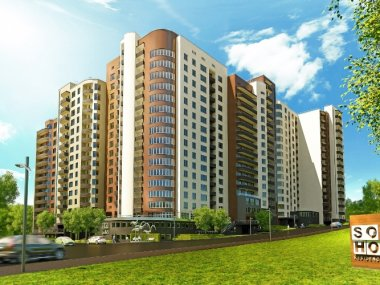
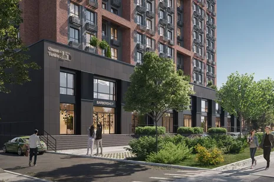

В нашій базі представлені:
- великі та відомі будкомпанії України, серед яких такі провідні забудовники, як «Київміськбуд», DIM, «Інтергал-Буд», Stolitsa Group, KAN Development та інші;
- великі державні та приватні будівельні фірми;
- українські та іноземні домобудівні компанії, які вирішили вести бізнес в Україні;
- найпопулярніші та нові організації, чиї імена тільки недавно з'явилися на ринку первинної нерухомості; надійні будівельні девелопери та холдинги.
Забудовники
 
Столиця України активно розвивається, а попит на нові житлові комплекси поступово зростає.
Це призводить до формування великого списку будівельних компаній Києва. Але вибрати надійну дуже важко:
інвестори часто потрапляють на недобросовісних замовників, які підробляють документи, зривають строки здачі
проєктів та економлять на будівельних матеріалах на шкоду якості.
Тому важливо знайти компанію, яка не тільки рекламує забудовників, а й надає детальний їхній аналіз:
- Перенесення будівництва
- Останні новини
- Партнерство
- Точна кількість ЖК
На нашому інтернет-ресурсі представлено великий вибір новобудов Києва, експертний аналіз їхніх документів та рейтинг.
Новобудови
Сумніваєтеся, вибрати "вторинку" або ж новобудови Києва? Аналіз фонду вторинного нерухомого майна (особливо зношені "панельки" та "хрущовки") показує, що великий відсоток відводиться під будинки, які незабаром підлягають розселенню, знесенню. Вони просто некомфортні для проживання, несуть небезпеку своїм жителям, адже капітальних ремонтів не проводили кілька десятиліть.
-
Щодо квартир у новобудовах Києва, то переваги незаперечні:
- будівлі зводяться з урахуванням сучасних стандартів, тенденцій; із застосуванням якісних енергоефективних технологій, довговічних будматеріалів;
- комфортне проектування, прийнятні площі;
- можливість створити проєкт-дизайн житла самостійно, регулюючи монтаж стін (крім несучих);
- новозаведені комунікації, інженерні споруди; благоустрій під'їздів, дворової, навколишньої території; підземні, гостьові автомобільні паркінги; дитячі, спортивні майданчики; приватна управлінська організація, яка підтримує порядок та обслуговує;
- відсутні проблеми, пов'язані з правами власності, адже першим купуєте без посередників безпосередньо у девелопера;
- продумана інфраструктура.
Комерційна
Якщо ви плануєте купити комерційну нерухомість в Києві, почніть пошук відповідних варіантів. У каталозі представлено
3 525 об`яв. Ціни об'єктів варіюються від 449 438 грн до 233 146 046 грн. Під час аналізу цін встановлена середня
вартість нерухомості — 26 300 139 грн.
Також передбачена можливість покупки комерційної нерухомості в кредит. На сьогодні є 33 таких оголошень.